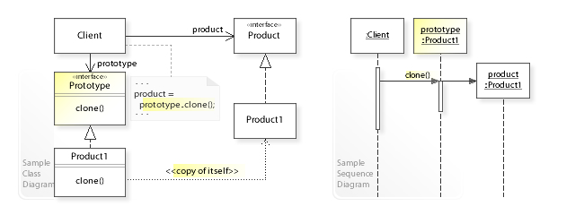
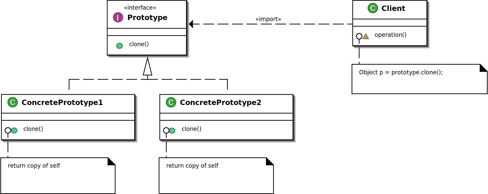
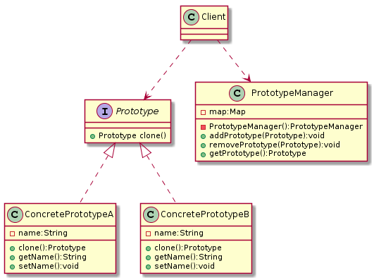

原型模式(Prototype Pattern)
wiki:

类型： 创建型
何时使用： 当直接创建对象的代价比较大时，则采用这种模式
UML

原型设计模式解决了以下问题：
- 如何创建对象以便在运行时指定要创建的对象？
- 如何动态加载类的实例化
原型设计模式描述了如何解决这些问题：
- 定义一个
Prototype返回自身副本的对象。
- 通过复制
Prototype对象创建新对象。
原型模式的注意事项:
- 使用原型模式复制对象不会调用类的构造方法。
- 单例模式中，只要将构造方法的访问权限设置为private型，就可以实现单例。但是clone方法直接无视构造方法的权限，所以，单例模式与原型模式是冲突的，在使用时要特别注意。
浅拷贝: Object类的clone方法只会拷贝对象中的基本的数据类型，对于数组、容器对象、引用对象等都不会拷贝深拷贝: 将原型模式中的数组、容器对象、引用对象等另行拷贝- 因为是从内存中直接
原型模式实例
抽象原型角色
1 2 3 4 5 6
| public abstract class Prototype implements Cloneable{ @Override public Object clone() throws CloneNotSupportedException { return super.clone(); } }
|
具体原型角色
1 2 3 4 5 6 7 8 9 10 11 12 13 14 15 16 17 18 19 20 21 22 23 24 25 26 27 28 29 30 31 32 33 34
| public class ConcretePrototype1 extends Prototype { @Override public Object clone() throws CloneNotSupportedException { return super.clone(); } } public class ConcretePrototype2 extends Prototype { private ArrayList list = new ArrayList(); * 由于Clone不会调用构造函数，可用来查看差别 */ public ConcretePrototype2() { System.out.println("ConcretePrototype2 init..."); this.list.add("Hello World!"); } public ArrayList getList() { return list; } public void setList(ArrayList list) { this.list = list; } @Override public Object clone() throws CloneNotSupportedException { ConcretePrototype2 clone = (ConcretePrototype2)super.clone(); clone.setList((ArrayList) this.getList().clone()); return clone; } }
|
场景类
1 2 3 4 5 6 7 8 9 10 11 12 13 14 15 16 17 18 19 20 21 22 23 24 25 26 27 28 29 30 31 32 33 34 35 36 37 38 39
| public class Client { public static void main(String[] args) throws CloneNotSupportedException { ConcretePrototype1 concretePrototype1 = new ConcretePrototype1(); System.out.println(concretePrototype1); System.out.println(concretePrototype1.clone()); System.out.println(); ConcretePrototype2 concretePrototype2 = new ConcretePrototype2(); System.out.println(concretePrototype2); final ConcretePrototype2 clone = (ConcretePrototype2)concretePrototype2.clone(); System.out.println(clone); System.out.println(concretePrototype2.getList()); System.out.println(clone.getList()); System.out.println(); int count = 10000; long startTmie = System.currentTimeMillis(); for (int i = 0;i<count;i++){ new ConcretePrototype2(); } long endTime = System.currentTimeMillis(); System.out.println("new cost :"+(endTime-startTmie)+"ms"); startTmie = System.currentTimeMillis(); for (int i = 0;i<count;i++){ concretePrototype2.clone(); } endTime = System.currentTimeMillis(); System.out.println("prototype cost :"+(endTime-startTmie)+"ms"); } }
|
带Prototype Manager的原型模式(登记形式的原型模型)
- 从缓存（MAP）中获取
- 可使用HashTable或者ConcurrentHashMap
- 如果使用HashMap需要考虑加锁，或者
Collections.synchronizeMap(hashMap);使其同步
UML
1 2 3 4 5 6 7 8 9 10 11 12 13 14 15 16 17 18 19 20 21 22 23 24 25 26 27 28 29 30 31 32 33 34 35
| @startuml class Client{ } interface Prototype{ + Prototype clone() } class ConcretePrototypeA{ - name:String + clone():Prototype + getName():String + setName():void } class ConcretePrototypeB{ - name:String + clone():Prototype + getName():String + setName():void } class PrototypeManager{ - map:Map - PrototypeManager():PrototypeManager + addPrototype(Prototype):void + removePrototype(Prototype):void + getPrototype():Prototype } Client ..> Prototype Client ..> PrototypeManager Prototype <|.. ConcretePrototypeA Prototype <|.. ConcretePrototypeB @enduml
|

抽象原型接口
1 2 3 4 5 6 7 8 9 10 11 12 13
| public interface Prototype { * 自定义克隆（可使用第三方序列化方式） * @return Prototype */ Prototype clone(); * 标识 * @return id */ String id(); }
|
具体原型对象
1 2 3 4 5 6 7 8 9 10 11 12 13 14 15 16 17 18 19 20 21 22 23 24 25 26 27 28 29 30 31 32 33 34 35 36 37 38 39 40 41 42 43 44 45 46 47 48 49 50 51 52 53
| public class ConcretePrototypeA implements Prototype{ private String name; public ConcretePrototypeA(String name) { this.name = name; } public String getName() { return name; } public void setName(String name) { this.name = name; } @Override public Prototype clone() { return new ConcretePrototypeA(this.getName()); } @Override public String id() { return this.name; } } public class ConcretePrototypeB implements Prototype{ private String name; public ConcretePrototypeB(String name) { this.name = name; } public String getName() { return name; } public void setName(String name) { this.name = name; } @Override public Prototype clone() { return new ConcretePrototypeB(this.getName()); } @Override public String id() { return this.name; } }
|
PrototypeManager
1 2 3 4 5 6 7 8 9 10 11 12 13 14 15 16 17 18 19 20 21 22 23 24 25 26 27 28 29 30 31 32
| public class PrototypeManager { private static Map<String,Prototype> map = new ConcurrentHashMap(); private PrototypeManager() {} public static void addPrototype(Prototype prototype){ map.put(prototype.id(), prototype); } public static void removePrototype(Prototype prototype){ map.remove(prototype.id()); } * 获取原始对象 * @param id 标识 * @return Prototype */ public static Prototype getPrototype(String id){ return map.get(id); } * 获取拷贝对象 * @param id 标识 * @return Prototype */ public static Prototype getPrototypeClone(String id){ return map.get(id).clone(); } }
|
场景类
1 2 3 4 5 6 7 8 9 10 11 12 13 14 15 16
| public class Client { public static void main(String[] args) { Prototype prototypeA = new ConcretePrototypeA("ConcretePrototypeA"); Prototype prototypeB = new ConcretePrototypeB("ConcretePrototypeB"); PrototypeManager.addPrototype(prototypeA); PrototypeManager.addPrototype(prototypeB); System.out.println(prototypeA); System.out.println(PrototypeManager.getPrototype("ConcretePrototypeA")); System.out.println(PrototypeManager.getPrototypeClone("ConcretePrototypeA")); } }
|
原型模式的优缺点
优点：
- 性能提高（直接操作内存中的二进制流）
- 逃避构造函数的约束
缺点：
- 必须实现 Cloneable 接口
- 需要为每一个类配置一个克隆方法，而且该克隆方法位于类的内部，当对已有类进行改造的时候，需要修改代码，违反了开闭原则。
- 在实现深克隆时需要编写较为复杂的代码，而且当对象之间存在多重签到引用时，为了实现深克隆，每一层对象对应的类都必须支持深克隆，实现起来会比较麻烦。